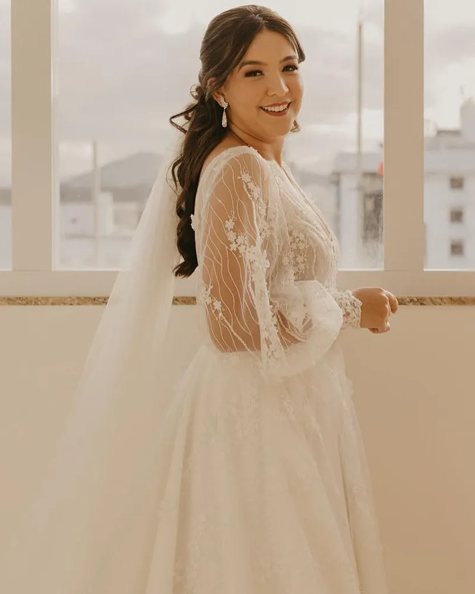
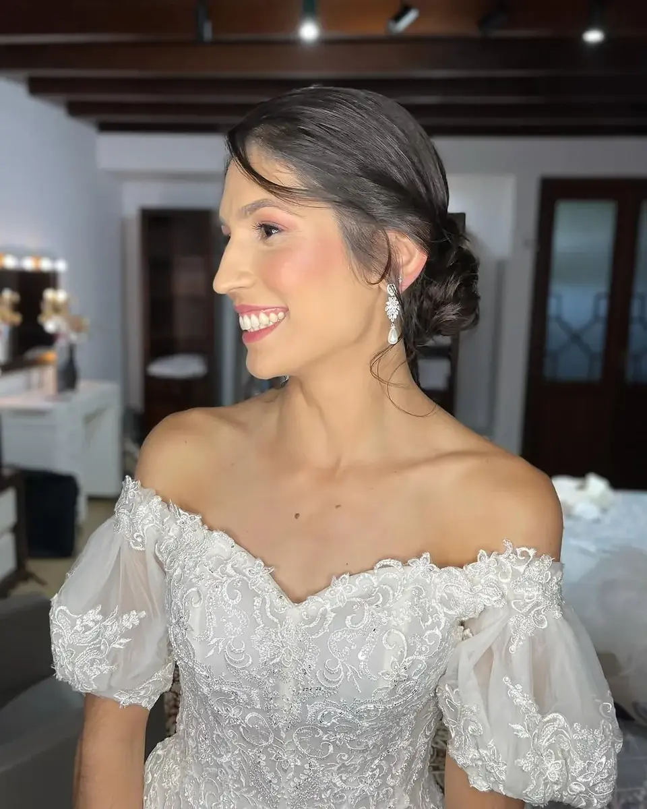
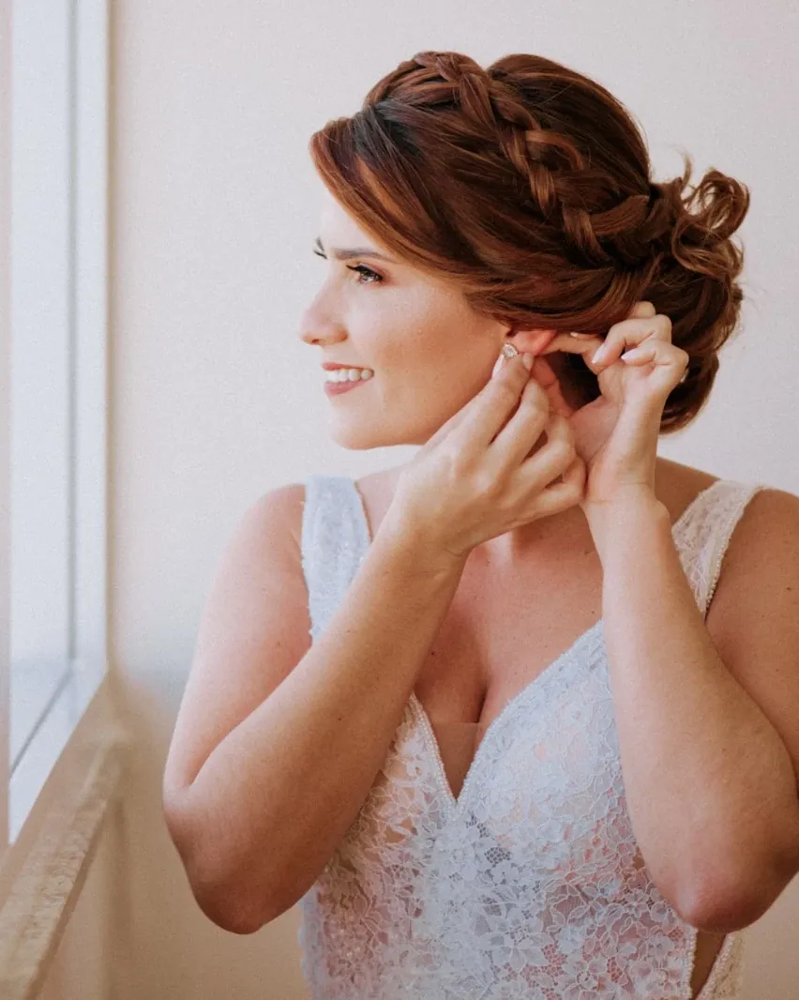
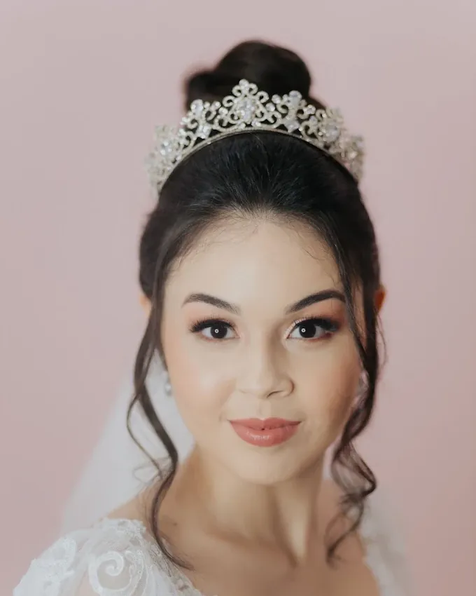
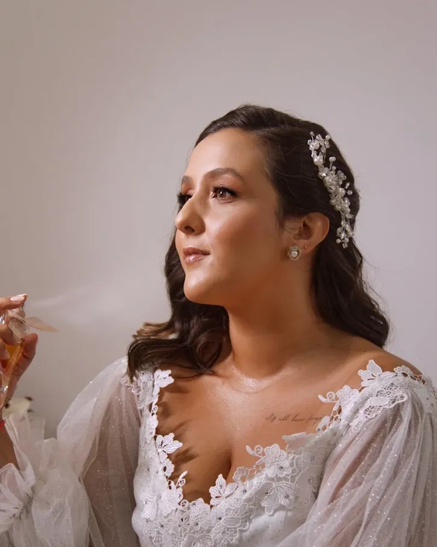
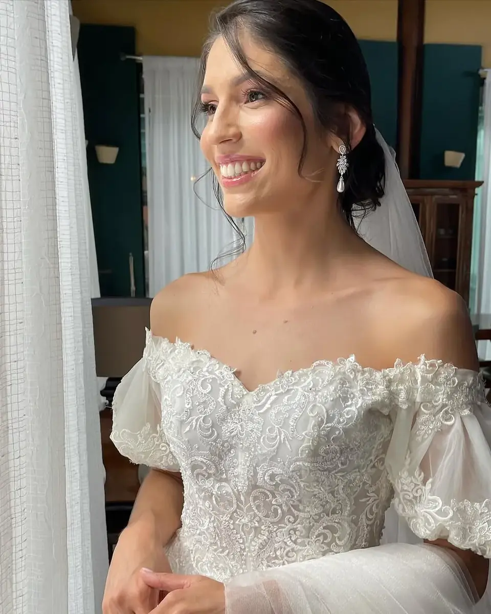

← Todos os serviços
03 / 04
Maquiagem e Penteado de Noiva em Charlotte, NC
Natural, delicada, romântica — com prova antes do dia.

Para a noiva e quem está com ela
- A noiva
- Madrinhas, mães, família
- No seu idioma
Da data ao grande dia
Envie sua data
Prova antes do dia
Vamos até você
Uma manhã tranquila
Noivas reais
Ver tudo no portfólio




Perguntas frequentes
Você faz prova de noiva?
Sim. A prova é a domicílio, para você ver e ajustar o visual antes do grande dia. Leve fotos de referência e seus acessórios.
Você vai até minha casa, hotel ou local da festa?
Sim. Atendemos a domicílio em Charlotte, Carolina do Norte, e na região da Carolina do Sul, num raio de cerca de 70 milhas de Charlotte.
Não quero ficar carregada. Dá para ficar natural?
Sim. Nosso estilo é leve e iluminado — a make que as nossas noivas descrevem como natural, delicada e romântica. Vocês conversam sobre o visual antes.
Sua data de casamento ainda está livre?
Mais da Lola Beauty